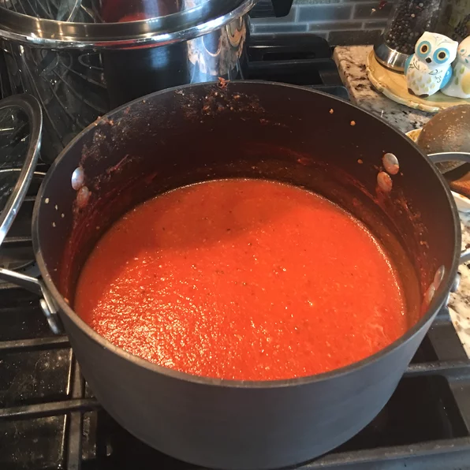

Tomato soup

Description
Hot and fresh tomato soup that will keep you warm during the cold winter days!
Ingredients
- 1 cup of chopped fresh tomatoes
- 2/3 cup chicken broth
- 1/3 chopped onions
- 1/2 tb and 1/2 tsb all-purpose flour
- 1 tsb Salt
- 1 tsb butter
- Sugar to taste
Steps
- In a pot, combine the tomatoes, onions, and chicken brooth. Bring the pot to a boil
- Empty the pot and melt the butter with medium heat.
- Stir the flour to make a roux until it is medium brown. Then gradually mix in the tomato mixture. Season with salt and sugar to taste.